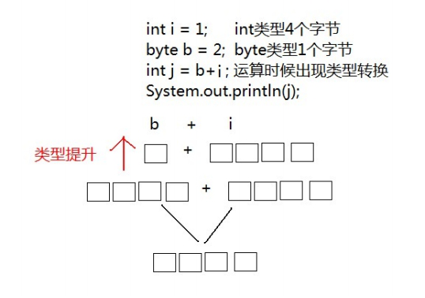
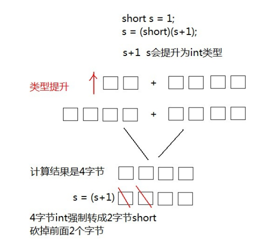
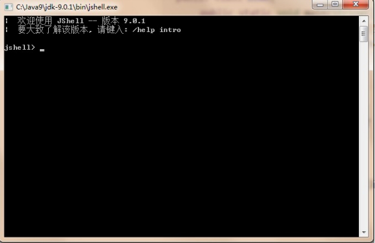
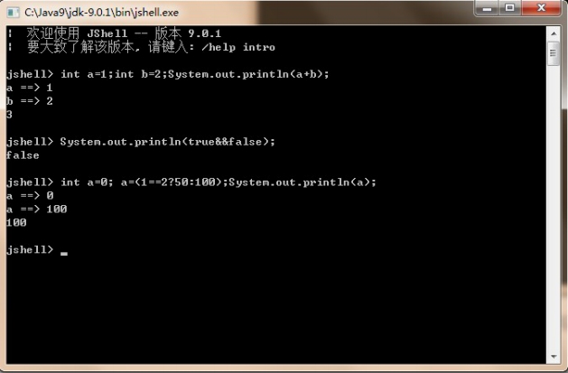
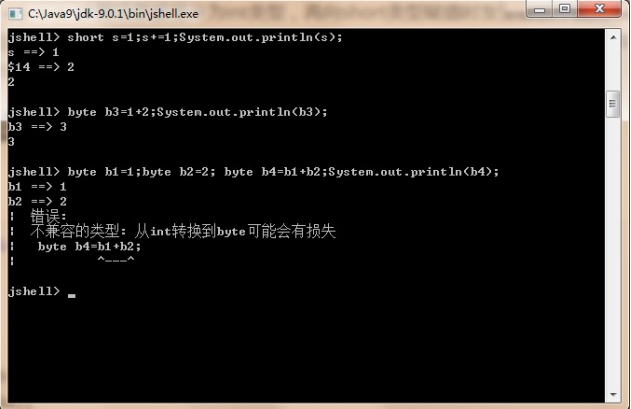

day02 【数据类型转换、运算符、方法入门】 今日内容教学目标第一章 数据类型转换1.1 自动转换转换原理图解转换规则1.2 强制转换转换原理图解强烈注意1.3 ASCII编码表第二章 运算符2.1 算数运算符2.2 赋值运算符2.3 比较运算符2.4 逻辑运算符2.5 三元运算符第三章 方法入门3.1 概述3.2 方法的定义3.3 方法的调用3.4 调用练习3.5 注意事项第四章 JShell脚本工具JShell脚本工具是JDK9的新特性第五章 扩展知识点5.1 +=符号的扩展5.2 常量和变量的运算
理解数据类型的强制转换
理解数据类型的自动转换
了解ASCII编码表
理解int类型和char类型的运算原理
理解运算符++ --的运算方式
理解+符号在字符串中的作用
理解比较运算符
理解逻辑运算符
掌握三元运算符的格式和计算结果
了解方法的概念
掌握无返回值无参数方法的定义格式
了解方法定义的注意事项
Java程序中要求参与的计算的数据，必须要保证数据类型的一致性，如果数据类型不一致将发生类型的转换。
一个 int 类型变量和一个 byte 类型变量进行加法运算， 结果会是什么数据类型？
int i = 1; byte b = 2; 运算结果，变量的类型将是 int 类型，这就是出现了数据类型的自动类型转换现象。
xxxxxxxxxxpublic static void main(String[] args) { int i = 1; byte b = 2; // byte x = b + i; // 报错 //int类型和byte类型运算，结果是int类型 int j = b + i; System.out.println(j);}byte 类型内存占有1个字节，在和 int 类型运算时会提升为 int 类型 ，自动补充3个字节，因此计算后的结果还是 int 类 型。  同样道理，当一个 int 类型变量和一个 double 变量运算时， int 类型将会自动提升为 double 类型进行运算。
xxxxxxxxxxpublic static void main(String[] args) { int i = 1; double d = 2.5; //int类型和double类型运算，结果是double类型 //int类型会提升为double类型 double e = d+i; System.out.println(e);}范围小的类型向范围大的类型提升， byte、short、char 运算时直接提升为 int 。 byte、short、char‐‐>int‐‐>long‐‐>float‐‐>double
将 1.5 赋值到 int 类型变量会发生什么？产生编译失败，肯定无法赋值。
xxxxxxxxxx int i = 1.5; // 错误double 类型内存8个字节， int 类型内存4个字节。 1.5 是 double 类型，取值范围大于 int 。可以理解为 double 是8 升的水壶， int 是4升的水壶，不能把大水壶中的水直接放进小水壶去。 想要赋值成功，只有通过强制类型转换，将 double 类型强制转换成 int 类型才能赋值。
xxxxxxxxxx 数据类型 变量名 = （数据类型）被转数据值；将 1.5 赋值到 int 类型，代码修改为：
xxxxxxxxxx // double类型数据强制转成int类型，直接去掉小数点。int i = (int)1.5;同样道理，当一个 short 类型与 1 相加，我们知道会类型提升，但是还想给结果赋值给short 类型变量，就需要强制转换。
xxxxxxxxxxpublic static void main(String[] args) { //short类型变量，内存中2个字节 short s = 1; /* 出现编译失败 s和1做运算的时候，1是int类型，s会被提升为int类型 s+1后的结果是int类型，将结果在赋值会short类型时发生错误 short内存2个字节，int类型4个字节 必须将int强制转成short才能完成赋值 */ s = s + 1；//编译失败 s = (short)(s+1);//编译成功}
xxxxxxxxxx // 定义s为short范围内最大值short s = 32767;// 运算后，强制转换，砍掉2个字节后会出现不确定的结果s = (short)(s + 10);xxxxxxxxxx public static void main(String[] args) { //字符类型变量 char c = 'a'; int i = 1; //字符类型和int类型计算 System.out.println(c+i);//输出结果是98}在计算机的内部都是二进制的0、1数据，如何让计算机可以直接识别人类文字的问题呢？就产生出了编码表的概念。
| 字符 | 数值 |
|---|---|
| 0 | 48 |
| 9 | 57 |
| A | 65 |
| Z | 90 |
| a | 97 |
| z | 122 |
将所有的英文字母，数字，符号都和十进制进行了对应，因此产生了世界上第一张编码表ASCII（ American Standard Code for Information Interchange 美国标准信息交换码）。
小贴士： 在char类型和int类型计算的过程中，char类型的字符先查询编码表，得到97，再和1求和，结果为98。char类型提升为了int类型。char类型内存2个字节，int类型内存4个字节。
| 算数运算符包括： | |
|---|---|
| + | 加法运算，字符串连接运算 |
| - | 减法运算 |
| * | 乘法运算 |
| / | 除法运算 |
| % | 取模运算，两个数字相除取余数 |
| ++ 、 -- | 自增自减运算 |
Java中，整数使用以上运算符，无论怎么计算，也不会得到小数。
xxxxxxxxxx public static void main(String[] args) { int i = 1234; System.out.println(i/1000*1000);//计算结果是1000}++ 运算，变量自己增长1。反之， -- 运算，变量自己减少1，用法与 ++ 一致。 独立运算：
混合运算：
xxxxxxxxxx public static void main(String[] args) { int a = 1; int b = ++a; System.out.println(a);//计算结果是2 System.out.println(b);//计算结果是2}xxxxxxxxxx public static void main(String[] args) { int a = 1; int b = a++; System.out.println(a);//计算结果是2 System.out.println(b);//计算结果是1}符号在字符串中的操作：
xxxxxxxxxx public static void main(String[] args){ System.out.println("5+5="+5+5);//输出5+5=55}| 赋值运算符包括： | |
|---|---|
| = | 等于号 |
| += | 加等于 |
| -= | 减等于 |
| *= | 乘等于 |
| /= | 除等于 |
| %= | 取模等 |
xxxxxxxxxxpublic static void main(String[] args){ int i = 5; i+=5;//计算方式 i=i+5 变量i先加5，再赋值变量i System.out.println(i); //输出结果是10 }| 比较运算符包括： | |
|---|---|
| == | 比较符号两边数据是否相等，相等结果是true。 |
| < | 比较符号左边的数据是否小于右边的数据，如果小于结果是true。 |
| > | 比较符号左边的数据是否大于右边的数据，如果大于结果是true。 |
| <= | 比较符号左边的数据是否小于或者等于右边的数据，如果小于结果是true。 |
| >= | 比较符号左边的数据是否大于或者等于右边的数据，如果小于结果是true。 |
| ！= | 不等于符号 ，如果符号两边的数据不相等，结果是true。 |
xxxxxxxxxxpublic static void main(String[] args) { System.out.println(1==1);//true System.out.println(1<2);//true System.out.println(3>4);//false System.out.println(3<=4);//true System.out.println(3>=4);//false System.out.println(3!=4);//true}逻辑运算符，是用来连接两个布尔类型结果的运算符，运算结果都是布尔值 true 或者 false
| 逻辑运算符包括： | |
|---|---|
| && 短路与 | 1. 两边都是true，结果是true 2. 一边是false，结果是false 短路特点：符号左边是false，右边不再运算 |
| -||- 短路或 | 1. 两边都是false，结果是false 2. 一边是true，结果是true 短路特点： 符号左边是true，右边不再运算 |
| ！ 取反 | 1. ! true 结果是false 2. ! false结果是true |
xxxxxxxxxx public static void main(String[] args) { System.out.println(true && true);//true System.out.println(true && false);//false System.out.println(false && true);//false，右边不计算 System.out.println(false || false);//falase System.out.println(false || true);//true System.out.println(true || false);//true，右边不计算 System.out.println(!false);//true}xxxxxxxxxxpublic static void main(String[] args) { int i = (1==2 ? 100 : 200); System.out.println(i);//200 int j = (3<=4 ? 500 : 600); System.out.println(j);//500}我们在学习运算符的时候，都为每个运算符单独的创建一个新的类和main方法，我们会发现这样编写代码非常的繁琐，而且 重复的代码过多。能否避免这些重复的代码呢，就需要使用方法来实现。
xxxxxxxxxx 修饰符 返回值类型 方法名 （参数列表）｛ 代码... return ;｝xxxxxxxxxx public static void methodName() { System.out.println("这是一个方法");}方法在定义完毕后，方法不会自己运行，必须被调用才能执行，我们可以在主方法main中来调用我们自己定义好的方法。在 主方法中，直接写要调用的方法名字就可以调用了。
xxxxxxxxxxpublic static void main(String[] args) { //调用定义的方法method method();}//定义方法，被main方法调用public static void method() { System.out.println("自己定义的方法，需要被main调用运行");}将三元运算符代码抽取到自定义的方法中，并调用。
xxxxxxxxxx public static void main(String[] args) { //调用定义的方法operator operator();}//定义方法，方法中定义三元运算符public static void operator() { int i = 0; i = (1==2 ? 100:200); System.out.println(i); int j = 0 ; j = (3<=4 ? 500:600); System.out.println(j);}xxxxxxxxxxpublic class Demo { public static void main(String[] args){ } //正确写法，类中，main方法外面可以定义方法 public static void method(){}} public class Demo { public static void main(String[] args){ //错误写法，一个方法不能定义在另一方法内部 public static void method(){} }}什么时候会用到 JShell 工具呢，当我们编写的代码非常少的时候，而又不愿意编写类，main方法，也不愿意去编译和运 行，这个时候可以使用JShell 工具。 启动JShell 工具，在DOS命令行直接输入JShell 命令。  接下来可以编写Java代码，无需写类和方法，直接写方法中的代码即可，同时无需编译和运行，直接回车即可 
小贴士: JShell工具，只适合片段代码的测试，开发更多内容，建议编写在方法中。
下面的程序有问题吗？
xxxxxxxxxx public static void main(String[] args){ short s = 1; s+=1; System.out.println(s);}分析： s += 1 逻辑上看作是 s = s + 1 计算结果被提升为int类型，再向short类型赋值时发生错误，因为不能将取值范围大的类型赋值到取值范围小的类型。但是， s=s+1进行两次运算 ， += 是一个运算符，只运算一次，并带有强制转换的特点， 也就是说 s += 1 就是 s = (short)(s + 1) ，因此程序没有问题编译通过，运行结果是2.
下面的程序有问题吗？
xxxxxxxxxx public static void main(String[] args){ byte b1=1; byte b2=2; byte b3=1 + 2; byte b4=b1 + b2; System.out.println(b3); System.out.println(b4);}分析： b3 = 1 + 2 ， 1 和 2 是常量，为固定不变的数据，在编译的时候（编译器javac），已经确定了 1+2 的结果并没有超过byte类型的取值范围，可以赋值给变量 b3 ，因此 b3=1 + 2 是正确的。 反之， b4 = b2 + b3 ， b2 和 b3 是变量，变量的值是可能变化的，在编译的时候，编译器javac不确定b2+b3的结果是什么，因此会将结果以int类型进行处理，所以int类型不能赋值给byte类型，因此编译失败。 在jshell中体现： 